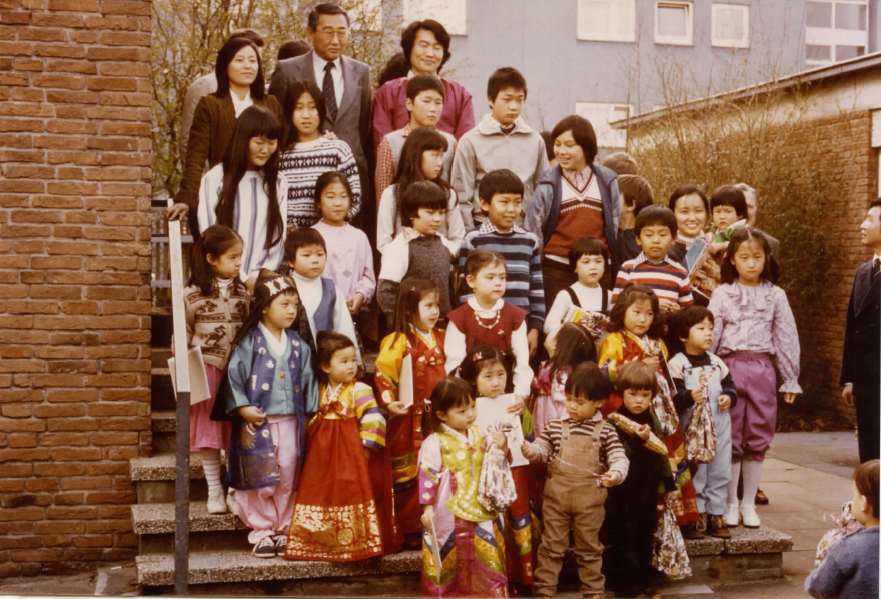

사단법인 브레멘 한국학교는 1983년 설립되었다. 당시 브레멘 한인회 회장으로 선출되었던 브레멘 대학 법대 박사과정 이광택(현. 국민대학교 법학부 명예교수) 님은 지역 한인들의 대화에 귀를 기울였고 한인회 회원들은 2세대의 한국어, 문화 역사 교육 필요성을 제청하였다. 브레멘 지역 100km반경내에는 한인 수가 꽤 되었다고 한다. 학교의 학생은 브레멘 한인가정, 한독가정들의 자녀뿐만 아니라 지금은 없어진 브레머하펜의 미군부대에 미군들과 결혼하신 한국분들의 자녀, 80년대 초에 독일로 입양되어진 아이들이었다. 독일 양부모들은 자녀들이 한국에서 온 만큼 한국을 알기 원했고 부모 스스로도 성인반에 한국어 수업에 참여했다고 한다.
이광택 교수님은 학교를 조직한 것 뿐만 아니라 학교의 영구성을 위해 1983년도에 독일어 정관을 작성하여 브레멘 지방법원에 등록을 했다. 이에 브레멘 한국학교는 Koreanische Schule Bremen e.V. 라는 공식 명칭을 갖게 된다. 등록된 단체는 공익의 목적을 브레멘 국세청으로 부터 인증받는다. 국세청의 인증은 한독가정 회원들이 주도하셨다고 했다. 이러한 견고한 기반이 브레멘 한국학교가 2017년까지 폐교나 임시 휴교를 하지 않고 이어진 이유이다. 35주년인 2018년에는 학교 프로젝트로 35년간 브레멘 한인학교와 함께 하신 분들께 개인적으로 감사인사를 하는 것이다.
